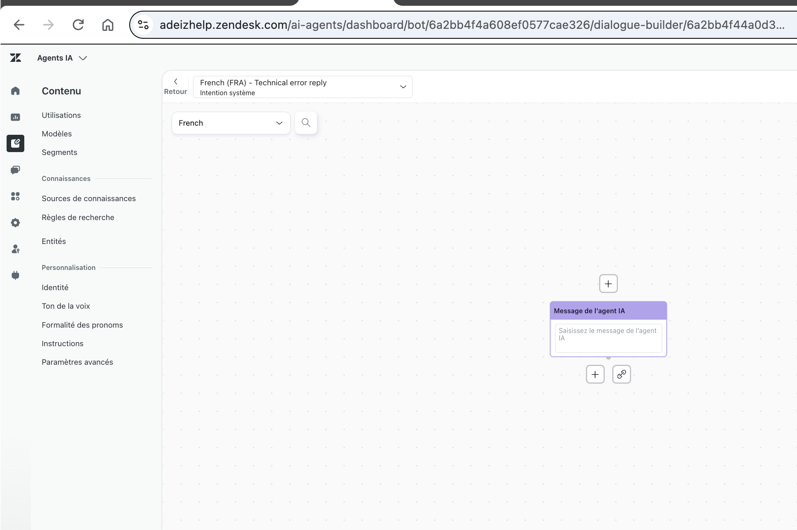
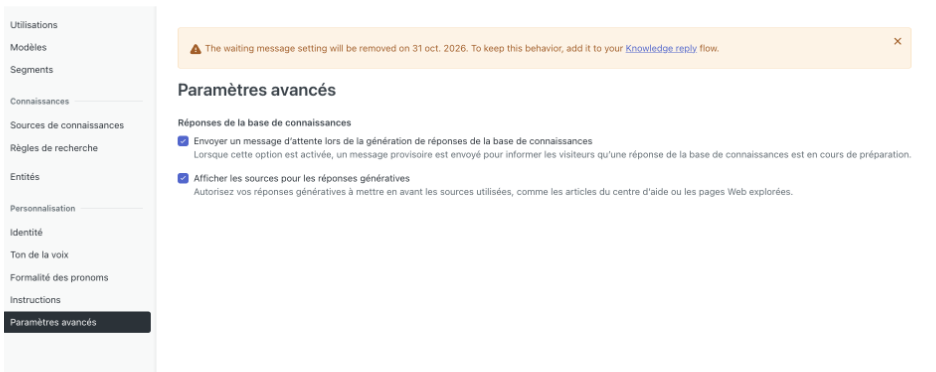
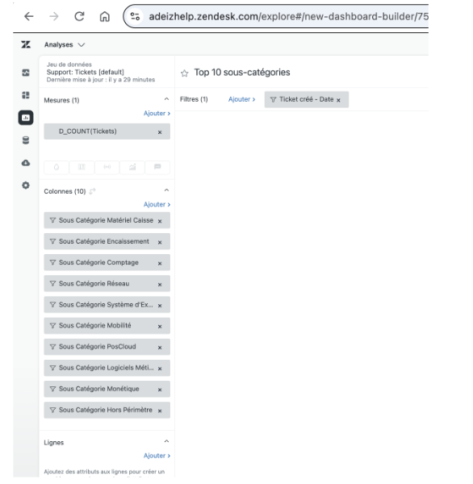
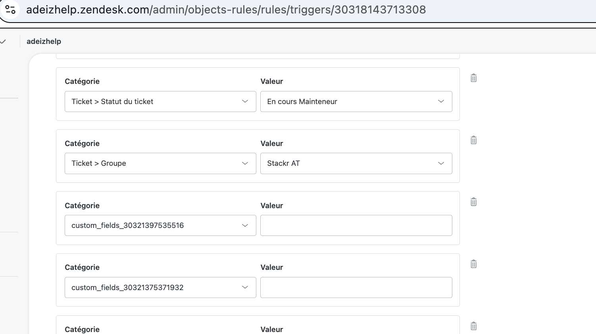
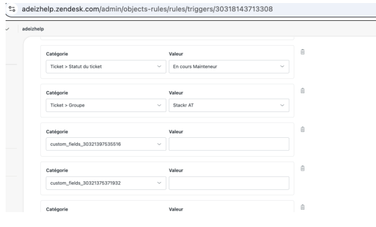
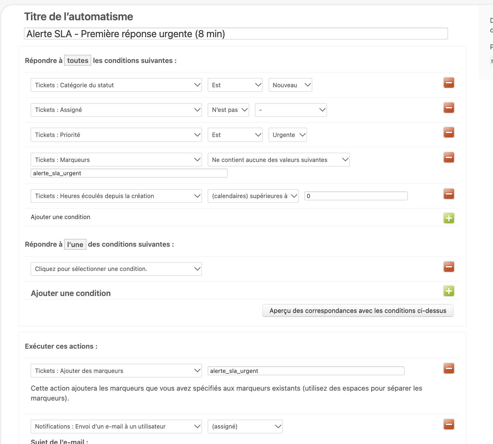
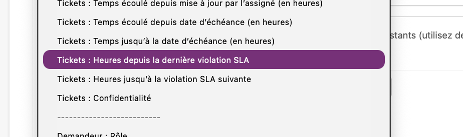
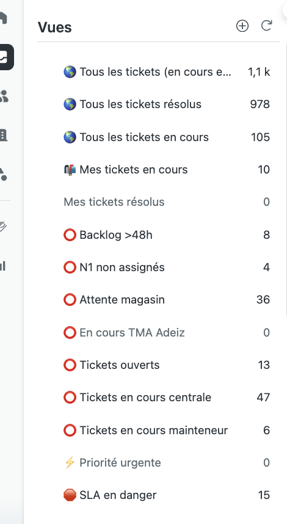
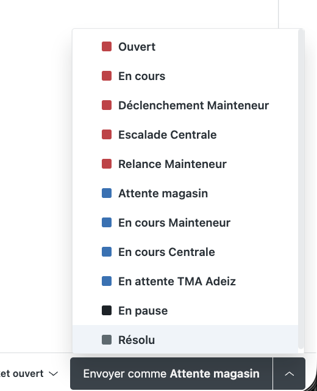
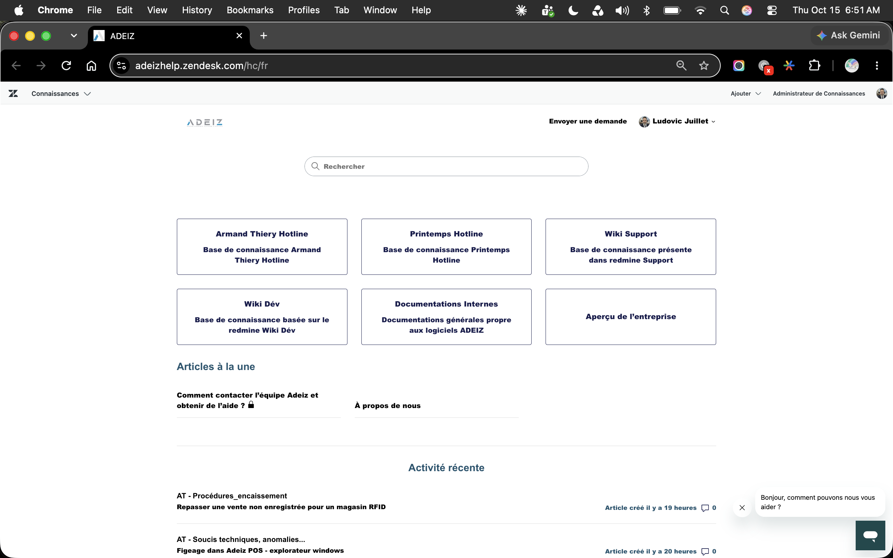

adeizhelp.zendesk.com
| Trigger cassé | Problème | URL |
|---|---|---|
| Escalade Mainteneur – Stackr AT | 2 champs vides : custom_fields_30321397535516, custom_fields_30321375371932 | ↗ |
| Escalade Mainteneur – Diebold AT | Actions cassées (champs manquants) | ↗ |
| Relance Mainteneur – Orange / Stackr / Nedap | Actions cassées (champs manquants) | ↗ |
| Problème | Impact |
|---|---|
| Flux "Technical error reply" vide, message non configuré | Erreur silencieuse visible par les utilisateurs |
| Aucun message de fallback configuré | Si le bot échoue, pas de réponse |
| Règles de connaissance basées sur des étiquettes non générées | Articles jamais suggérés |
| Paramètres obsolètes dans la configuration | Comportement imprévisible |
| Widget non personnalisé aux couleurs ADEIZ | Identité visuelle absente |
Flux "Technical error reply" vide

Paramètre déprécié au 31 oct. 2026

| Problème HC | Impact IA |
|---|---|
| 0 label sur 917 articles | Copilot sans suggestions |
| Certains articles = principalement des images, sans texte | Contenu illisible par l'IA |
| Commentaires activés sur tous les articles | Risque de spam / modération |
| Ancien éditeur Zendesk utilisé | Limites de mise en forme |
include:mail.zendesk.com au DNS). Vérifier également DKIM et DMARC.

| Statut | Trigger |
|---|---|
| NOTIFICATIONS CLIENT | |
| ON | Notifier demandeur + CC à la réception |
| ON | Notifier demandeur du ticket proactif |
| ON | Notifier demandeur + CC de la mise à jour |
| ON | Demander CSAT (messagerie) |
| ROUTAGE & AFFECTATION | |
| ON | Affecter automatiquement au 1er agent répondant |
| ON | Affectation rapide |
| ON | Retour en Niveau 1 non assigné |
| ON | Définir les tickets sans priorité sur normale |
| ON | Définir le type sur Incident par défaut |
| ON | Voicemail non répondu → Groupe Niveau 1 |
| ON | TMA Adeiz – Assignation groupe et statut |
| ESCALADES MÉTIER | |
| ON | Escalade AT – Admin systèmes |
| ON | Escalade AT – Pôle Bureautique |
| ON | Escalade AT – Pôle Commerce |
| ON | Escalade AT – Pôle Décisionnel |
| ON | Escalade AT – GDM |
| ON | Escalade AT – Rfid / Sycles / Stock |
| MAINTENEURS (⚠ triggers cassés) | |
| CASSÉ | Escalade Mainteneur – Diebold AT (champs vides) ↗ |
| CASSÉ | Escalade Mainteneur – Stackr AT (custom_fields vides) ↗
  |
| CASSÉ | Relance Mainteneur – Orange/Stackr/Nedap (champs manquants) ↗ |
| ON | Escalade Mainteneur – Nedap AT |
| ON | Escalade Mainteneur – Orange AT (Extranet) |
| ON | Orange AT – Alerte Réf. Externe manquante |
| ON | Déclenchement Mainteneur – Matériel sans contrat |
| ON | Relance Mainteneur 1 & 2 – Diebold / Stackr / Nedap |
| ON | Relance Mainteneur – Alerte N2 / Orange |
| IA & COPILOT | |
| ON | Activer Auto Assist (Copilot) sur nouveaux tickets |
| ON ⚠ | Ultimate.ai Email Channel Automation (résidu IA externe à supprimer) |
| BACKLOG & ROUTAGE | |
| ON | Alerte backlog – retirer tag relance_48h |
| DOUBLON | Affectation rapide (2 triggers actifs en même temps) ↗ |
| ON | Notifier assigné + groupe de l'affectation |
| Statut | Automation |
|---|---|
| ON | Clore ticket 3 jours après Résolu |
| ON | Notification en attente 24h |
| ON | Notification en attente 5 jours |
| ON | Demander CSAT (automatisme système) |
| ON | Relance Orange – Réf. Externe manquante après 1h |
| ON | Alerte backlog – ticket assigné sans MAJ 48h |
| ON | Alerte SLA – 1ère réponse urgente (8 min) |
| ON | Alerte SLA – 1ère réponse high (15 min) |
| ON | Alerte SLA – 1ère réponse normale (30 min) |
| ON | Alerte SLA – 1ère réponse low (1h) |
⚠ Condition actuelle (à remplacer)

✅ Conditions natives disponibles

| Priorité | 1ère réponse | Trav. agent | Suiv. réponse | Résolution |
|---|---|---|---|---|
| Urgent | 10 min | 30 min | 30 min | 2h |
| Élevé | 20 min | 1h | 1h | 8h |
| Normal | 45 min | 3h | 2h | 24h |
| Faible | 2h | 8h | 4h | 48h |
| Jours | Plage horaire | Durée |
|---|---|---|
| Lundi – Samedi | 09:00 – 20:30 | 11h30 ✓ |
| Dimanche | Fermé | |
| Total/semaine | 69h ✓ | |
| Vue active | Type | # |
|---|---|---|
| SUPERVISION GLOBALE | ||
| 🌎 Tous les tickets (en cours et résolus) | Supervision | 1,1k |
| 🌎 Tous les tickets résolus | Archive | 978 |
| 🌎 Tous les tickets en cours | Supervision | 105 |
| ⭕️ N1 non assignés | Alerte | 4 |
| ⭕️ Backlog >48h | Backlog | 8 |
| ⭕️ Attente magasin | En attente | 36 |
| ⭕️ En cours TMA Adeiz | TMA | 0 |
| ⭕️ Tickets ouverts | Open | 13 |
| ⭕️ Tickets en cours centrale | Centrale | 47 |
| ⭕️ Tickets en cours mainteneur | Mainteneur | 6 |
| ⚡️ Priorité urgente | Urgence | 0 |
| 🛑 SLA en danger | SLA | 15 |
| AGENT PERSONNEL | ||
| 📬 Mes tickets en cours | Agent | 10 |
| Mes tickets résolus | Agent | 0 |
| ✅ Tickets attribués | Agent | |
| Mes tickets attribués | Agent | |
| Nouveaux tickets | Agent | |
| PAR CANAL | ||
| Canaux::💌 Email | Canal | |
| Canaux::💬 Messagerie | Canal | |
| ESCALADES PAR GROUPE | ||
| Escaladé::🌐 Global | Escalade | |
| Escaladé::🌐 Global AT | Escalade | |
| Escaladé:: 🔧 Diebold AT | Mainteneur | |
| Escaladé::🖥️ Admin systèmes | AT | |
| Escaladé::🧾 Pôle Bureautique | AT | |
| Escaladé::💰 Pôle Commerce | AT | |
| Escaladé::📈 Pôle Décisionnel | AT | |
| Escaladé::📊 GDM | AT | |
| Escaladé::📡 Rfid | AT | |
| Escaladé::📦 Stock | AT | |
| Escaladé::🔄 Sycles | AT | |
| SUIVI & HISTORIQUE | ||
| 👁️🗨️ En pause | Pause | |
| Tickets mis à jour récemment | Suivi | |
| Tickets résolus récemment | Suivi | |
| Tickets Armand Thiery | Client | |
| Tickets notés ces 7 derniers jours | CSAT | |

Snapshot vues en temps réel · Octobre 2026
| Groupe | Niveau |
|---|---|
| SUPPORT INTERNE | |
| Groupe Support Niveau 1 | N1 |
| Groupe Support Niveau 2 | N2 |
| Adeiz | Global |
| Administrateur | Admin |
| Agents Light | Lecture |
| Tma Adeiz | TMA |
| PÔLES MÉTIER | |
| AT – Admin systèmes | AT |
| AT – GDM | AT |
| AT – Pôle Bureautique | AT |
| AT – Pôle Commerce | AT |
| AT – Pôle Décisionnel | AT |
| AT – Rfid / Stock / Sycles | AT |
| MAINTENEURS EXTERNES | |
| Diebold AT | Mainteneur |
| Stackr AT | Mainteneur |
| Nedap AT | Mainteneur |
| Champ OFF | Note |
|---|---|
| Mode de déclenchement | Lié aux mainteneurs ? |
| Mainteneur | À réactiver ou supprimer |
49 champs actifs sur 51 total. Le champ "Mainteneur" OFF est surprenant vu la complexité des workflows mainteneurs.
| Champ | Usage |
|---|---|
| Contrat de maintenance | Mainteneur |
| Matériel | Incident |
| Catégorie / Sous-Catégories (x8) | Classification |
| Code Caisse | Métier |
| Réf. Externe | Orange Extranet |
| Type de demande | Routage |
| Aircall Call ID / SMS ID | Téléphonie |
| Time Tracking (total / last update) | Performance |
| Intent / Sentiment (IA) | Zendesk AI |
| Résumé (IA) | Zendesk AI |
| Type | Nombre |
|---|---|
| Agents humains | ~27 |
| Comptes fonctionnels (pôles) | 7 |
| AI Agent | 1 |
| Compte test "Lj test" | 1 ⚠ |

| Indicateur | Valeur | Évaluation |
|---|---|---|
| Articles total | 917 | Volume élevé |
| Catégories | 1 ("Général") | Critique |
| Sections | 124 | Non hiérarchisé |
| Accès | Segment | Visible par organisation spécifique |

Ces sections ont une logique métier claire et peuvent servir de base pour la réorganisation.
| Fonctionnalité | État |
|---|---|
| Copilot (Auto Assist) | 90% tickets ✓ |
| Intent / Sentiment / Résumé | Actifs ✓ |
| AI Agent (bot widget) | Non prêt ⚠ |
| Flux "Technical error reply" | Vide ⚠ |
| Messages de fallback | Absents ⚠ |
| Labels sur articles HC | 0 / 917 ⚠ |
| Articles avec texte exploitable | Certains = principalement des images ⚠ |
| Recommandations Copilot | 7 en attente ↗ |
| Widget personnalisé ADEIZ | Non personnalisé |
| App | État | Usage |
|---|---|---|
| JIRA | ON | Gestion de projet IT |
| Aircall Hotline | ON | Téléphonie intégrée |
| Time Tracking | ON | Suivi du temps agent |
| ATDESK | ON | App interne Adeiz |
| Conditional Fields Lite | ON | Formulaire dynamique |
| Zendesk Chat | ON | Messagerie |
| TeamViewer | OFF | À réactiver ou retirer |
| Gestion Catégories | OFF | À vérifier vs Conditional Fields |
| Observation | Priorité |
|---|---|
| SPF/DKIM non configuré pour le domaine Zendesk | Urgent |
| AI Agent non prêt pour la production : erreurs de config, aucun message de fallback | Critique |
| Paramètre "Waiting message" AI Agent déprécié le 31 oct. 2026 | Critique |
| Règles de connaissance configurées via labels mais aucun label généré dans les conversations | Urgent |
| Widget messagerie non personnalisé à l'identité visuelle ADEIZ | Faible |
| Même emoji ⭕️ sur la majorité des vues : navigation moins intuitive | Faible |
| Architecture de groupes N1→N2→AT→Mainteneurs en place | OK |
| Observation | Priorité |
|---|---|
| 4+ triggers cassés : actions avec valeurs de champs vides (Stackr AT, Diebold AT, relances mainteneurs) | Critique |
| Trigger "Affectation rapide" en doublon (2 actifs simultanément) | Moyen |
| Trigger Ultimate.ai résidu encore actif en production | Moyen |
| Automations SLA : workaround à remplacer par les conditions natives (temps calendaire) | Urgent |
| 2 politiques SLA identiques pour AT + Printemps : une seule suffit | Important |
| Macro "Résolution confirmée – Clôture du ticket" ne peut pas fermer un ticket directement via macro | Moyen |
| Macros sans organisation en dossiers ni restriction par groupe | Faible |
| Ordre des triggers et automations à vérifier : l'ordre impacte le comportement | Moyen |
| Observation | Priorité |
|---|---|
| HC : 1 seule catégorie "Général" pour 917 articles et 124 sections : navigation difficile | Critique |
| HC : 0 label sur 917 articles : Copilot et AI Agent ne peuvent suggérer aucun article | Critique |
| Help Center : certains articles contiennent principalement des images, sans texte exploitable par l'IA | Urgent |
| Rapport Explore "Top 10 sous-catégories" cassé : attributs personnalisés à reconfigurer, nuls non exclus | Urgent |
| HC : commentaires activés dans les articles (config individuelle) : à désactiver par cohérence | Moyen |
| HC : ancien éditeur Zendesk encore utilisé : limite les fonctionnalités IA et la lisibilité | Moyen |
| Compte test "Lj test" actif en production + 7 comptes fonctionnels en tant qu'agents | Important |
| 2 champs de test actifs dans les organisations (materials_test_multifield, test_material_in_org) | Faible |
| Formulaire de ticket unique pour 17 groupes et multiples types d'incidents | Important |
| HC favicon non configuré en PNG : à corriger | Faible |
| 13 statuts personnalisés : volume élevé, catégories (En attente / En pause) à vérifier. Les automations de relance s'appliquent à tous les tickets En attente, ce qui peut générer des relances non voulues. | Moyen |
Basé sur les tags de champs personnalisés. Tickets sans catégorie exclus.
Ce rapport identifie 9 axes d'amélioration prioritaires.
La correction des triggers cassés et la finalisation de l'AI Agent sont les premières étapes.